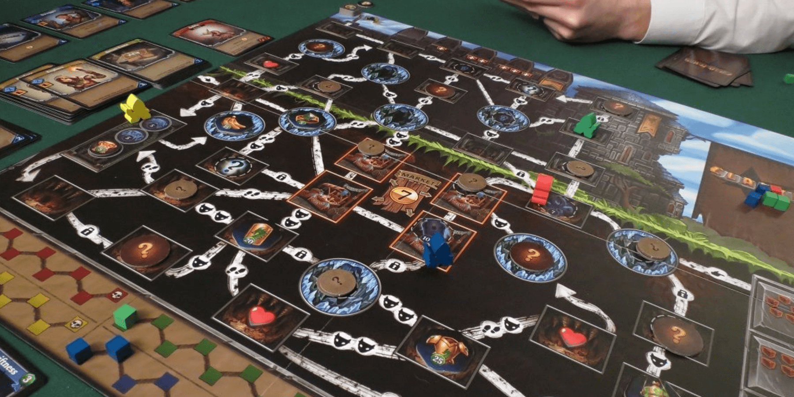
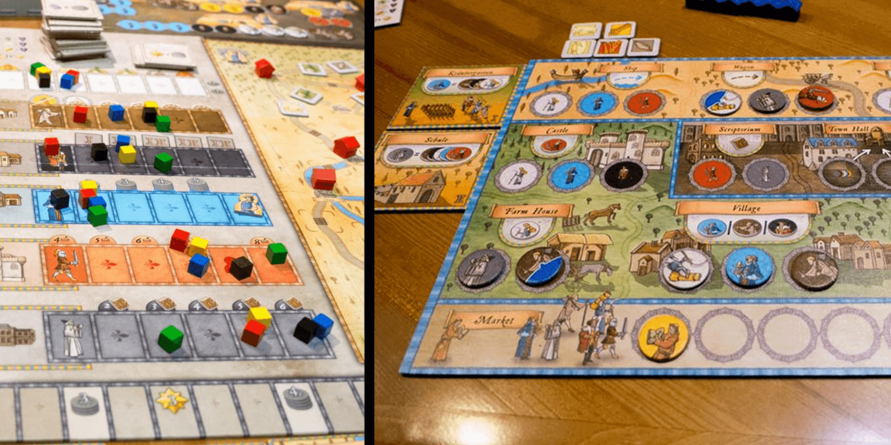
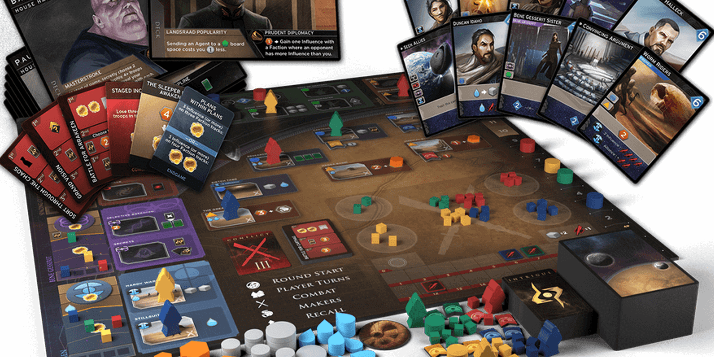

3 of the Best Deck Building Board Games like Dominion


Dominion popularized the deck-building mechanic in 2008 and has held up as a solid game ever since. Players start with the same set of cards, but each may pursue a completely different strategy based on which cards they add to their deck throughout the game.
Many games have now built on this mechanic while adding their own twists and themes. If you are looking for games similar to Dominion, these board games offer great challenges and also can be played over and over again!
Clank!

Clank! is a fantasy deck-building game where you'll venture deep underground to collect loot and fight monsters. The cards you draw each turn will dictate your combat strength and how quickly you can move. The goal is to have the most points at the end of the game, but there's a catch - you have to make it back to the surface alive!
Each starting deck includes "Clank!" cards. Draw too many of these, and you'll be at a greater risk of getting scorched when the terrifying Dragon attacks (your armor is noisy)! It's game over if your health runs out, so you've got to get your loot and get back as quickly as possible.
The cards you can add to your deck provide new bonuses, effects, or victory points, and each character has unique abilities that influence how you build your deck. You also might find that your deck-building priorities change the closer you are to losing all your health.
Clank! is a fun take on the deck-building genre and encourages you to push your luck for the biggest payout. Its theme and all-or-nothing outcomes make Clank! a more lighthearted game, but there are still numerous strategies you'll be able to try out.
Buy Clank! on Amazon
Orléans
Orléans is a more involved strategy game that revolves around bag-building, a unique variant of deck-building. Rather than adding cards to a personal deck, players add various workers to their bag throughout the game.
Each round, you'll randomly pull a set number of workers from your bag and place them on your board to perform various actions. Action spaces may let you add workers to your bag, move around the map, or construct guilds to gain points. Each action space requires a different combination of workers to activate, so you must build your bag in a way that helps your strategy.
The goal of the game is to gain the most VP, and strategies vary widely in how and when VP are earned. All strategies are governed by luck of the draw, but you also get to control your luck by deciding which workers go into your bag!
If you like Dominion and are looking for something with more complexity, definitely give Orléans a try. The addition of worker placement makes this game difficult to master but also makes it highly replayable.
Buy Orléans on Amazon
Dune: Imperium
Dune: Imperium is a deck-building and worker-placement game based on the classic sci-fi novel. This adaptation has great artwork, clear graphic design, and its gameplay feels unique and challenging. The theme is also quite immersive, even if you haven't read the book.
Cards in this game can be used in one of two ways. On your turn, you can send a worker to an action space by playing a card with a matching symbol, OR you can keep that card to gain its bonus at the end of the round. You'll always be faced with this tradeoff, and this adds a lot of strategic depth when choosing cards for your deck.
Points are scored by increasing your influence with each faction or by winning combat victories. The game is a race to 10 points, but this feels more like a satisfying tug-of-war as (almost) all point sources are public information.
Direwolf really seems to excel in the deck-builder genre (they also designed Clank!). This game is exciting to play, and it's a great option if you are looking for something with more player interaction compared to Dominion.
Buy Dune: Imperium on Amazon
Honorable Mentions
Have you already played the above games or just want some more to consider? We also love these other deck-builder board games!
Mystic Vale is a card-builder in addition to a deck-builder! Not only can you choose which cards to add to your deck, but you can also upgrade them by sliding other transparent cards into their sleeves. This makes for new strategies and rewarding moments - plus, building your own cards is just a lot of fun.
Buy Mystic Vale on AmazonFort is a deck-building game with a fun theme and lots of player interaction. You'll recruit friends to your treehouse fort and use their special abilities to gain Pizza, Toys, and victory points. If you don't play with a friend though, they might leave to hang out at another player's fort! This a deep but approachable game with high quality components, all packed into a very small box.
Buy Fort on AmazonTaverns of Tiefenthal is a lighthearted game about brewing ale, expanding your tavern, and winning over nobles (and points). You'll add cards with various effects and bonuses to your deck, and then roll dice to determine which actions you may take each turn. The fun theme and increased level of luck make this is a great option for a more relaxing, less competitive experience.
Buy Taverns of Tiefenthal on AmazonWant more recommendations or have feedback for us? Send an email to support@spiralburst.com and we'll get back to you!